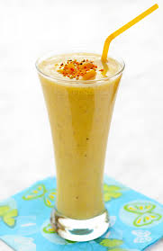
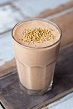

A pineapple surpee is a refreshing smoothie that balances sweetness and acid. I love this in the summer one cup or can of pineapple diced or chunks for that acic flavour quarter of a cup of tropical fruit juice for sweetness some vanilla youhurt i would go with a generous spoonful half a cup of water
The green machine is probably the most important smoothie of the day, however with a classic green machine smoothie
I can find they're
way too sweet or bittter so I decided to make my own, I call it the GREEN BOMB.
In this smoothie you will
need - cup of kale, kale is rich in vitamins
A cup of spinach for that fibre kick
1 whole celery for dietary control
A cup of almond milk
5 Strawberries for their taste- This is can be altered for taste
This smoothie is a great way to start yur morning. The warming feeling of the pumpkin spice gets you ready for the day. one cup ice for the smoothie aspect half cup of whole milk for some calcium intake third of a cup of pumpkin puree one tablespoon of honey for some sweetness and a pinch of nutmeg for that warmth in flavour
Detoxing is a great way to get rid of all them terrible things in your body. For someone like me, who can
go through stages of eating junk and drinking alcohol I definitly recommend adding this to your Monday morning routine
I call this Feel Berryful - My twist on feel beautiful -
So firstly you are going to need some coconut milk, this is sweet
But full of goodness! Then some berries either fresh or frozen I tend to use blackberries, strawberries, raspberries all this
can be changed
Finally some ginger, ginger is great for digestion purposes. And there you have a wonderful detox smoothie.